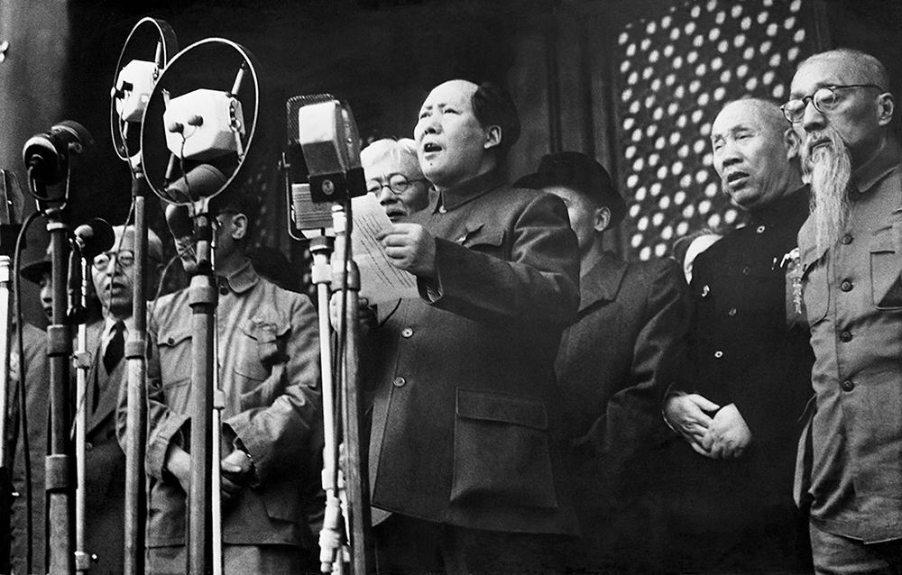

1949
开国大典
1949年10月1日下午3时，开国大典在北京天安门广场举行。毛泽东在天安门城楼上宣读中央人民政府公告，随后按动电钮，升起第一面五星红旗。54门礼炮齐鸣28响，28这个数字对应中国共产党从1921年成立到建国的28年。长安街上，工人、农民、学生、市民的游行队伍一直走到深夜。
建国时的家底并不厚：全国钢产量15.8万吨，原油12万吨，发电量43亿度，人均预期寿命35岁上下，文盲率超过八成，能通车的铁路只有两万多公里。新政权接手的是长期战乱留下的局面，还有尚未结束的解放战争——西南、华南大片地区仍在作战，直到1951年西藏和平解放，大陆才基本统一。
1949年9月，中国人民政治协商会议第一届全体会议通过《共同纲领》，起临时宪法的作用。10月中央人民政府成立，政务院下设各部委；同年底到1950年初，全国财经工作会议决定统一财政收支、稳定物价，人民币开始站住脚。